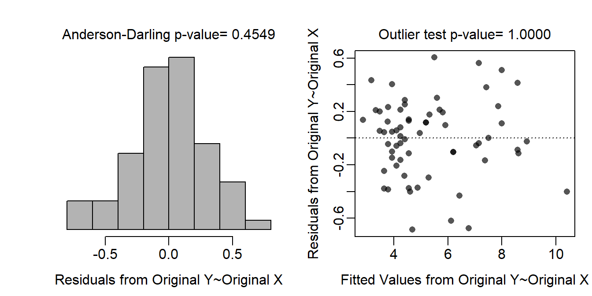
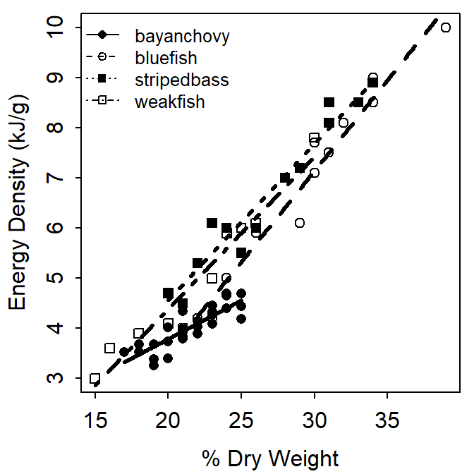
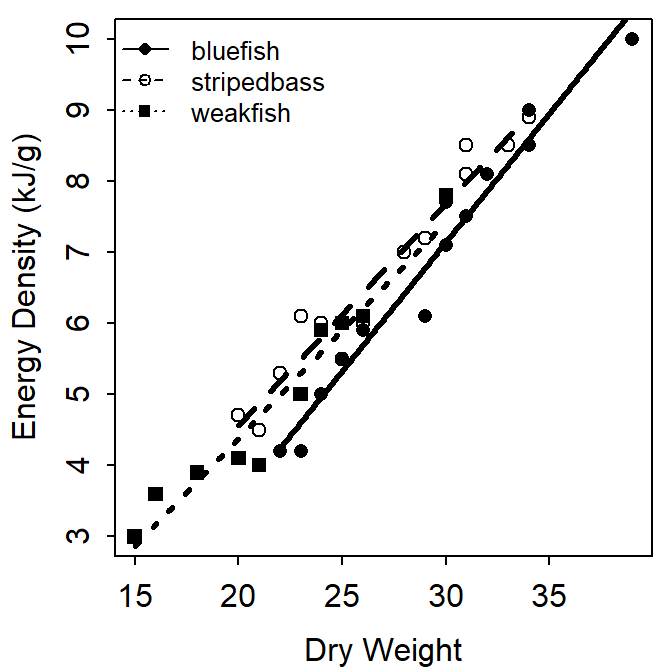

Hartman and Brandt (1995) examined the relationship between energy density (J/g wet weight) and percent dry weight for four species – Bay Anchovy (Anchoa mitchilli), Bluefish (Pomatomus saltatrix), Striped Bass (Morone saxatilis), and Weakfish (Cynoscion regalis). Their primary interest was to determine how energy density was related to percent dry weight and if the relationship differed among species. The recorded energy density values were converted from J/g to kJ/g to better represent significant digits.
> options(show.signif.stars=FALSE)
> library(NCStats)
> FED <- read.csv("https://raw.githubusercontent.com/droglenc/NCData/master/FishEnergyDensity.csv")
> FED$ed2 <- FED$ed/1000
> str(FED)'data.frame': 64 obs. of 4 variables:
$ species: Factor w/ 4 levels "bayanchovy","bluefish",..: 2 2 2 2 2 2 2 2 2 2 ...
$ dw : int 39 34 34 32 31 30 30 29 26 25 ...
$ ed : int 10000 9000 8500 8100 7500 7100 7700 6100 5900 5500 ...
$ ed2 : num 10 9 8.5 8.1 7.5 7.1 7.7 6.1 5.9 5.5 ...> levels(FED$species)[1] "bayanchovy" "bluefish" "stripedbass" "weakfish" This represents an indicator variable regression because the response variable (energy density) is quantitative and there is a quantitative explanatory variable (dry weight), which is called a covariate, and a categorical explanatory variable (species).
Three indicator variables are required to represent the four species.
With this, Bay Anchovy are the reference group.
The ultimate full model is
where ED is energy density and DW is dry weight. The corresponding submodels are
The ultimate full model is fit in R with
> lm1 <- lm(ed2~dw*species,data=FED)A quick check of assumptions suggests that they are all met as the residual plot shows no curvature or funneling, the Anderson-Darling p-value indicates normality, and the outlier test p-value indicates no outliers.
> transChooser(lm1)
The model parameters have the following meanings:
Estimates (and 95% CIs) of the model parameters are obtained with
> cbind(Ests=coef(lm1),confint(lm1)) Ests 2.5 % 97.5 %
(Intercept) 0.7027509 -0.42063764 1.8261395
dw 0.1541905 0.10223406 0.2061469
speciesbluefish -4.4402509 -5.96844344 -2.9120584
speciesstripedbass -2.3783415 -3.86110640 -0.8955765
speciesweakfish -2.3960056 -3.85760797 -0.9344031
dw:speciesbluefish 0.2083095 0.14562788 0.2709912
dw:speciesstripedbass 0.1576205 0.09429774 0.2209434
dw:speciesweakfish 0.1496038 0.08320906 0.2159985The hypothese (and, thus, models) for the parallel lines test are as follows:
The ANOVA table for conducting the parallel lines test is below
> anova(lm1)Analysis of Variance Table
Response: ed2
Df Sum Sq Mean Sq F value Pr(>F)
dw 1 170.693 170.693 1858.966 < 2.2e-16
species 3 10.592 3.531 38.452 1.258e-13
dw:species 3 4.106 1.369 14.904 3.002e-07
Residuals 56 5.142 0.092 The p-value for the interaction term (p<0.00005; i.e., last p-value in table above) is clearly less than α indicating that H0 should be rejected. This result indicates that the slopes for the regressions between energy density and dry weight differ among species and, thus, the relationship between energy density and dry weight differs among the species.
The parallel lines test indicates SOME difference in slopes between the species, but not specifically which species’ slopes are different. The following video explains what we should do to identify the specific differences.
The compSlopes() results below were shown in the video.
> compSlopes(lm1)Multiple Slope Comparisons (using the 'holm' adjustment) comparison diff 95% LCI 95% UCI p.unadj p.adj
1 bluefish-bayanchovy 0.20831 0.14563 0.27099 0.00000 0.00000
2 stripedbass-bayanchovy 0.15762 0.09430 0.22094 0.00001 0.00005
3 weakfish-bayanchovy 0.14960 0.08321 0.21600 0.00003 0.00012
4 stripedbass-bluefish -0.05069 -0.10109 -0.00029 0.04873 0.10290
5 weakfish-bluefish -0.05871 -0.11291 -0.00450 0.03430 0.10290
6 weakfish-stripedbass -0.00802 -0.06296 0.04693 0.77116 0.77116
Slope Information (using the 'holm' adjustment) level slopes 95% LCI 95% UCI p.unadj p.adj
1 bayanchovy 0.15419 0.10223 0.20615 0 0
4 weakfish 0.30379 0.26246 0.34513 0 0
3 stripedbass 0.31181 0.27561 0.34801 0 0
2 bluefish 0.36250 0.32744 0.39756 0 0As discussed in the video, these results show that the slope for Bay Anchovy differs from the slopes for the other three species (top three p-values) but that the slopes for the other three species are not different (bottom three p-values). The first three differences in the top portion of the results suggest that the slope for Bay Anchovy is less than the slopes for the other three species. The slopes and confidence intervals in the bottom portion of the results also suggest that the slope for Bay Anchovy is less than the slope for the other three species.
These results are illustrated in the following fitted-line plot.
> fitPlot(lm1,xlab="% Dry Weight",ylab="Energy Density (kJ/g)",
+ legend="topleft",cex.leg=0.8)
For the three species above that had the same slope it is useful to also determine if they have the same intercepts or not. If they have the same intercepts (and the same slopes) then they can be modeled with the same line (or the lines would be called coincident).
To begin this analysis I reduced the data frame to just these three species (by eliminating Bay Anchovy), fit the ultimate full model to just these species, reaffirmed that they have the same slopes (i.e., examine the parallel lines test for just these three species), and determined if they have the same intercept or not.
> FED1 <- filterD(FED,species!="bayanchovy")
> lm2 <- lm(ed2~dw*species,data=FED1)
> anova(lm2)Analysis of Variance Table
Response: ed2
Df Sum Sq Mean Sq F value Pr(>F)
dw 1 104.963 104.963 838.6208 < 2.2e-16
species 2 2.584 1.292 10.3210 0.0003476
dw:species 2 0.556 0.278 2.2225 0.1247887
Residuals 32 4.005 0.125 The interaction (bottom) p-value does reaffirm that these three species have the same slope (and are, thus, parallel). Given that the lines are parallel it is possible then to perform the equal intercepts test. The hypotheses for equal intercepts test are
The p-value for the factor variable (p=0.0003; i.e., the second line) is less than α and, thus, the H0 for the equal intercepts test is rejected. Thus, there is a difference in intercepts among these three species. The following video explains what we should do to indentify which pairs of intercepts are different.
The results of compIntercepts() below were shown in the video.
> compIntercepts(lm2,common.cov=0)Warning: Removed an interaction term from 'mdl' (i.e., assumed
parallel lines) to test intercepts.Tukey HSD on means adjusted assuming parallel lines comparison diff 95% LCI 95% UCI p.adj
1 stripedbass-bluefish 0.6313980 0.2911082 0.9716878 0.0001843341
2 weakfish-bluefish 0.5064749 0.1445318 0.8684180 0.0044160914
3 weakfish-stripedbass -0.1249231 -0.4808922 0.2310461 0.6693967026
Mean ed2 when dw=0 bluefish stripedbass weakfish
-2.752451 -2.121053 -2.245976 The top of this output shows that the intercept for Bluefish differs from the intercepts for the other two species (top two p-values), which do not differ (bottom p-value). The bottom of this output shows the estimated intercepts for the three species. This bottom output is not particularly interesting because it shows the mean energy density when the percent dry weight is 0 (because common.cov=0), which is not useful.
If the common.cov=0 argument is removed then compIntercepts() will show the mean energy density at the mean percent dry weight, which is more useful. Given that the lines are parallel, differences at any value of X will be the same as when X=0. Thus, the top portion of the output did not change.
> compIntercepts(lm2)Warning: Removed an interaction term from 'mdl' (i.e., assumed
parallel lines) to test intercepts.Tukey HSD on means adjusted assuming parallel lines comparison diff 95% LCI 95% UCI p.adj
1 stripedbass-bluefish 0.6313980 0.2911082 0.9716878 0.0001843341
2 weakfish-bluefish 0.5064749 0.1445318 0.8684180 0.0044160914
3 weakfish-stripedbass -0.1249231 -0.4808922 0.2310461 0.6693967026
Mean ed2 when dw=26.10526 bluefish stripedbass weakfish
5.828663 6.460061 6.335138 These results are visualized with the following fitted line plot.
> fitPlot(lm2,xlab="Dry Weight",ylab="Energy Density (kJ/g)",
+ legend="topleft",cex.leg=0.8)
Finally, it should be noted that the top p-values in the ANOVA table when the lines are parallel is the so-called “relationships test.” Specifically, it tests whether a relationshiph exists between the response variable and the covariate. It should only examined if the lines are parallel because when the lines are parallel then the relationship between the response variable and the covariate differs depending on the group being examined.
The ANOVA table above clearly shows that there is a relationship between the energy density of the fish and the percent dry weight.